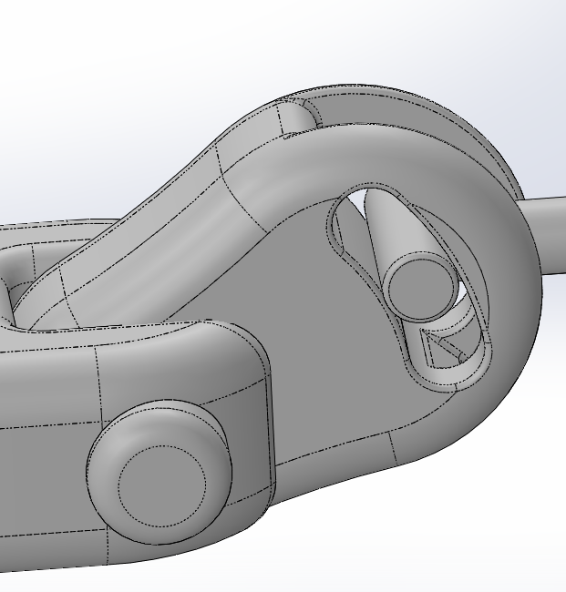

01

可調式轉軸機構
採用多段式轉軸結構，使各功能臂可自由旋轉與固定，提升操作靈活度。轉軸具高穩定性，能在不同角度下維持支撐強度，改善傳統照護設備在使用時的受力不均問題。
02

前向拉取機構——鼻胃管架專用拉環
拉環以簡化動線為核心，可直接將鼻胃管架從停放位置快速拉出至操作區域。此結構縮短取用距離，提高照護者的操作反應速度，特別適用於居家狹小空間的照護情境。
03

多軸調整的平板支臂
平板支臂採多軸結構，可前後、左右及傾角調整，以提升使用彈性。照護者可依當下動線快速定位，維持穩定視角，減少操作中頻繁調整姿勢的負擔。